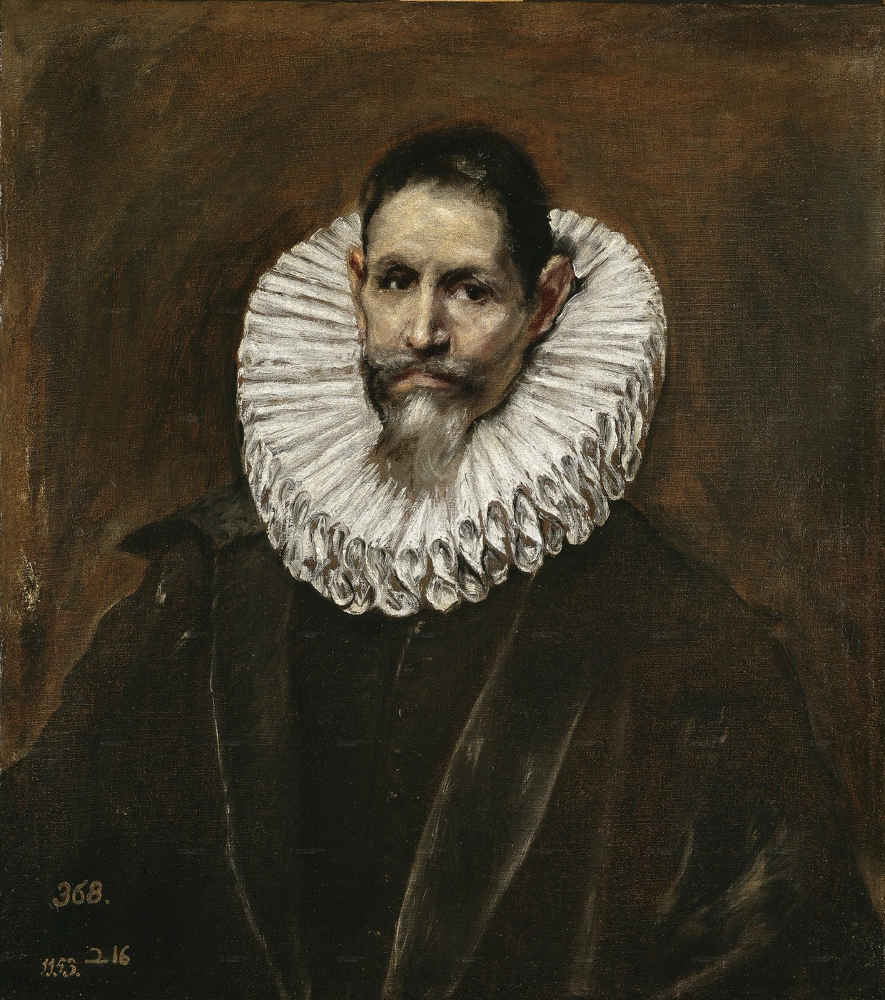
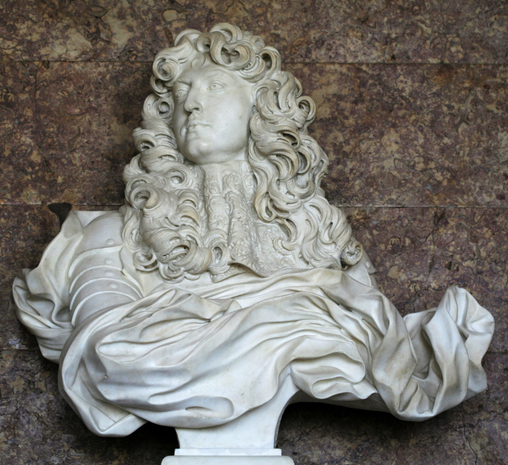
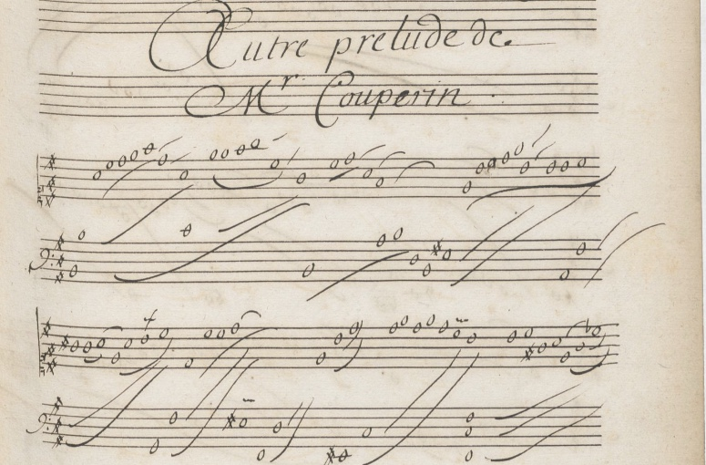
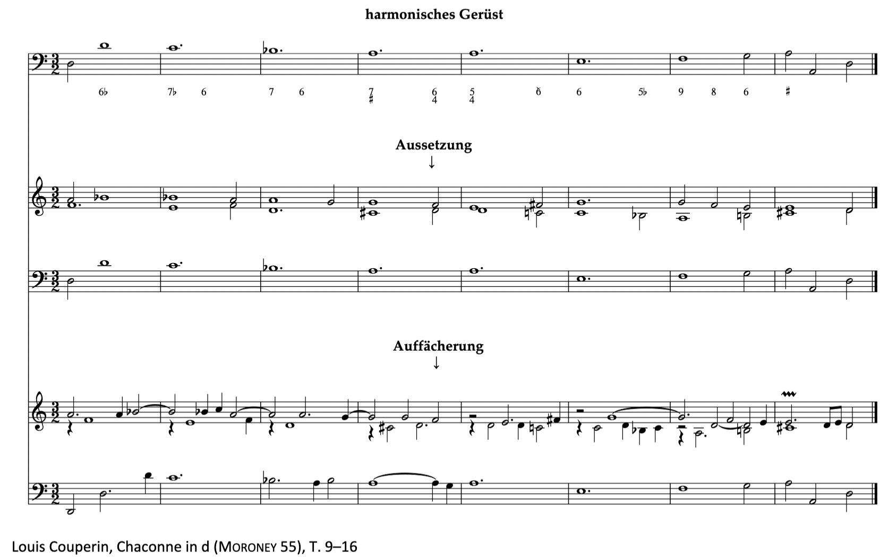

Johannes Menke, Kontrapunkt II. Die Musik des Barock, Laaber 2017 (22020).
Ludwig Holtmeier, Johannes Menke und Felix Diergarten, Solfeggi, Bassi e Fughe. Georg Friedrich Händels Übungen zur Satzlehre, Wilhelmshaven 2013.
Semesterplan
KadenzenKadenzformen und ihre Fluchtmöglichkeiten, besonders die cadenza doppia
SequenzenGegenschrittmodelle, barocke Anreicherung durch Dissonanzen, Terminologie
OktavregelEntstehung aus der cadenza doppia, arabische Stufen als Gegenmodell zu Funktionen
„Die Gothik betont die zusammenhaltenden Glieder: feste Rahmen, leichte Füllung; der Barock betont den Stoff: der Rahmen fällt entweder ganz weg oder bleibt […] ungenügend, die Masse quillt über.“
Heinrich Wölfflin, Renaissance und Barock. Eine Untersuchung über Wesen und Entstehung des Barockstils in Italien, München 1888, S. 43.

El Greco, Jerónimo de Cevallos, 1613Madrid, Museo del PradoFrancisco de Zurbarán, Die Kreuzigung, 1627Art Institute of Chicago

Gian Lorenzo Bernini, Büste Ludwigs XIV., 1665Versailles, Salon de Diane · Foto: Coyau, CC BY-SA 3.0

Louis Couperin, „Autre prelude de Mr. Couperin“, Manuscrit Bauyn II, f. 4 (Ausschnitt).
„Prinzip der Falte“1

1Die Falte als Denkfigur des Barock nach Gilles Deleuze, Le pli. Leibniz et le baroque, Paris 1988. .
Jedes Gerüst lässt sich unendlich weit auffächern, bis zum Überquillen.
Gerüstsätze verstehen, erarbeiten und immer weiter entfalten
Bestehende Kompositionen auf einen Gerüstsatz reduzieren und selbst neu diminuieren
Kadenz: Bewegung von der großen Sexte (Bewegungsklang) in die Oktave (Ruheklang)
Tenorklausel
Sopranklausel
Spannung ⇒ Bewegung ⇒ Ruhe
=> Spiel mit Hörerwartung
Ausblick
Wie können wir weitere Stimmen hinzufügen
Entwicklung hin zum Barock: Der Bass als primäre Stimme